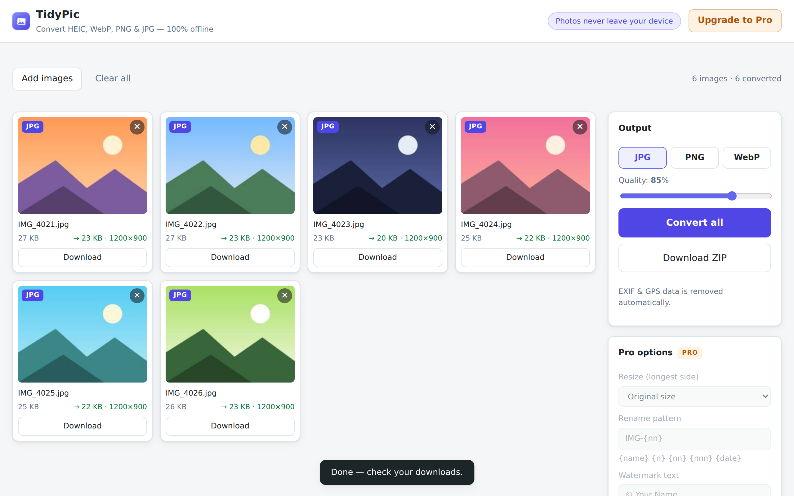

Chrome extension · 100% offline
TidyPic
iPhone photo won't open on Windows? Every other converter uploads your photos to a server first. TidyPic converts HEIC, AVIF, WebP, PNG and JPG right inside your browser — and strips EXIF & GPS location data automatically.

Free, unlimited
HEIC that just works
Decode iPhone HEIC/HEIF locally — plus AVIF, WebP, PNG, JPG, GIF and BMP.
Bulk convert
Any number of photos at once, to JPG, PNG or WebP with a quality slider. Download one by one or as a ZIP.
Privacy scrub
EXIF and GPS location data are removed automatically on every conversion.
Truly offline
Zero network requests — your photos never leave your machine.
Pro — one-time purchase
Resize presets
Longest side 2048 / 1600 / 1200 / 800 px — never upscaled.
Batch rename
Patterns like IMG-{nn} or {date}-{n} applied across the whole batch.
Watermark
Your text, bottom-right on every image.